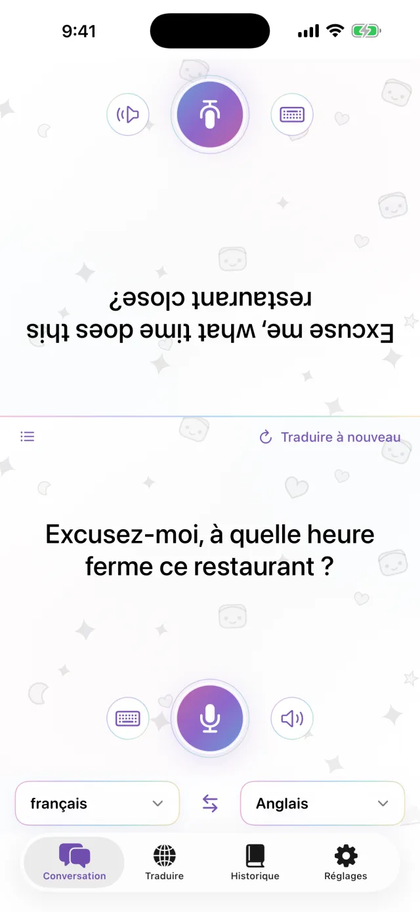
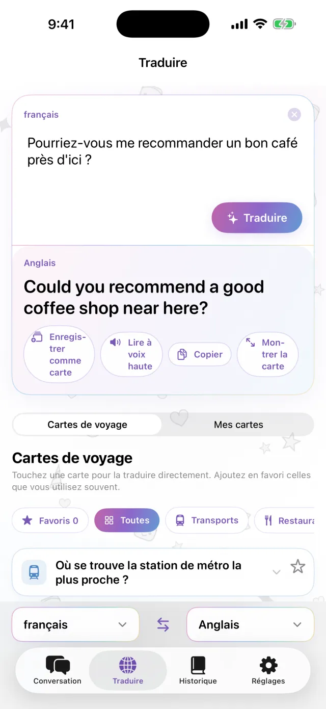
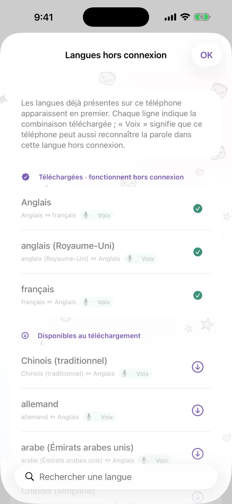
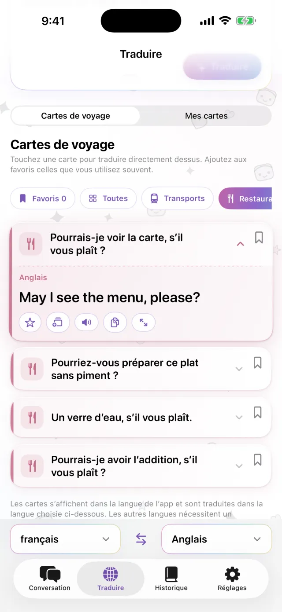
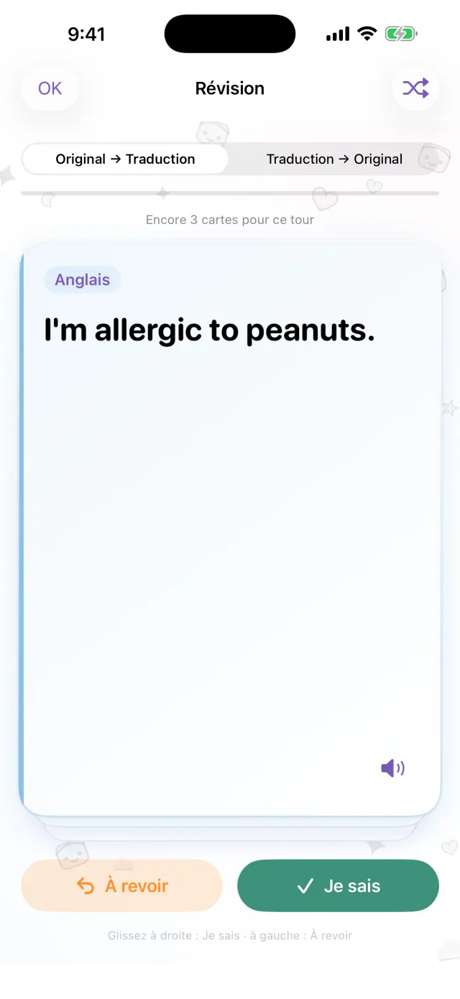

Traducteur pour iPhone
Traducteur pour iPhone
Posez l’iPhone entre vous.
C’est tout.
Touchez le micro et parlez. La traduction s’affiche sur l’autre moitié de l’écran, face à votre interlocuteur. Quand il répond, cela fonctionne de la même façon. Téléchargez d’abord les langues : l’app marche alors sans connexion.
Bientôt sur l’App Store- Environ 20 langues
- Hors connexion après téléchargement
- Sans inscription

Saisie au clavier
Pas envie de parler à voix haute ? Écrivez.
Dans un endroit calme, ou quand l’autre personne parle trop vite, saisissez simplement votre phrase. Vous pouvez afficher la traduction en plein écran et la montrer.
- Copiez la traduction ou faites-la lire à voix haute
- Inversez les deux langues d’une simple touche

Hors connexion
Sans connexion, la traduction continue
La traduction, la reconnaissance vocale et la lecture à voix haute fonctionnent sur votre iPhone. Téléchargez les langues dont vous avez besoin avant le voyage. Vous pouvez les utiliser dans l’avion ou avant d’acheter une carte SIM. Ce que vous dites n’est pas envoyé à un serveur, et les enregistrements ne sont pas conservés.

Phrases enregistrées
Enregistrez les phrases que vous répétez
L’adresse de l’hôtel, une allergie alimentaire, la gare que vous cherchez. Enregistrez-les comme cartes pour ne plus les saisir à chaque fois. Touchez une carte : elle est traduite dans la langue de l’autre personne. Des cartes de voyage sont déjà incluses : transports, restaurants, hébergement et achats.

Pro
Révisez vos phrases enregistrées au bon moment
Touchez l’étoile d’une phrase pour la garder en révision. Si vous la retenez, elle revient après 1, 3, 7, 14, puis 30 jours. Sinon, elle revient le jour même. Vous pouvez aller du texte d’origine vers la traduction, ou dans l’autre sens. Cette fonction fait partie de Pro.

Utile pour
- Commander dans un petit restaurant
- Donner l’adresse à un chauffeur de taxi
- Expliquer une allergie à la pharmacie
- Déposer ses bagages à la réception de l’hôtel
- Demander son chemin
Aperçu en 30 secondes
Le mode avion est activé dans cette vidéo.
L’essentiel
| Langues | Environ 20 (celles qu’Apple traduit directement sur l’appareil) |
|---|---|
| Hors connexion | Oui, après le téléchargement des langues |
| Saisie vocale | Oui. Certaines langues sont disponibles uniquement au clavier |
| Compte | Non requis |
| Prix | Gratuit. Pro est en option (voir ci-dessous) |
| Configuration requise | iPhone sous iOS 18 ou version ultérieure |
- Une connexion est nécessaire la première fois, pour télécharger les langues.
- Les prix s’affichent dans votre devise locale sur l’App Store.
Gratuit et Pro
Gratuit
- Conversation face à face
- Saisie au clavier et affichage plein écran
- Traduction hors connexion
- Cartes de voyage et 3 cartes personnelles
- Petite bannière publicitaire
Pro
- Sans publicité
- Autant de cartes que vous voulez
- Historique des traductions et révision espacée
À la semaine, au mois, ou en achat unique.
Avant de partir, téléchargez les langues.
Bientôt sur l’App StoreiPhone · iOS 18 ou ultérieur · Téléchargement gratuit · Comment fonctionne chaque écran